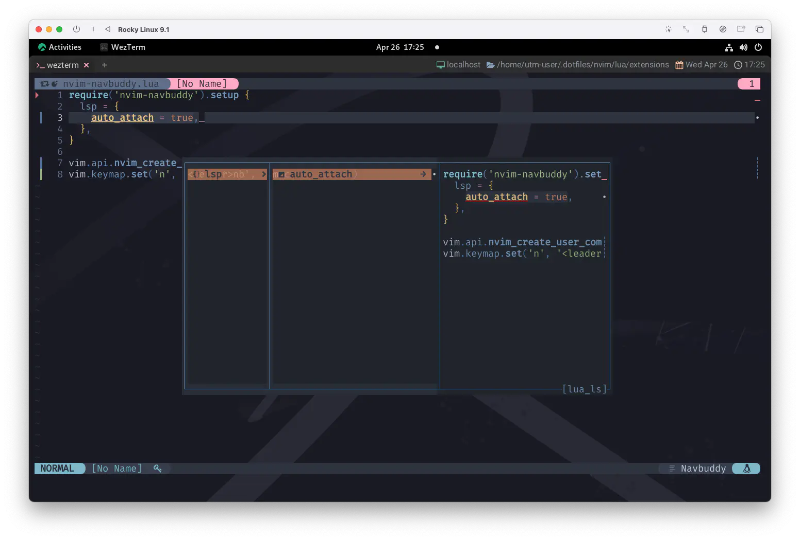
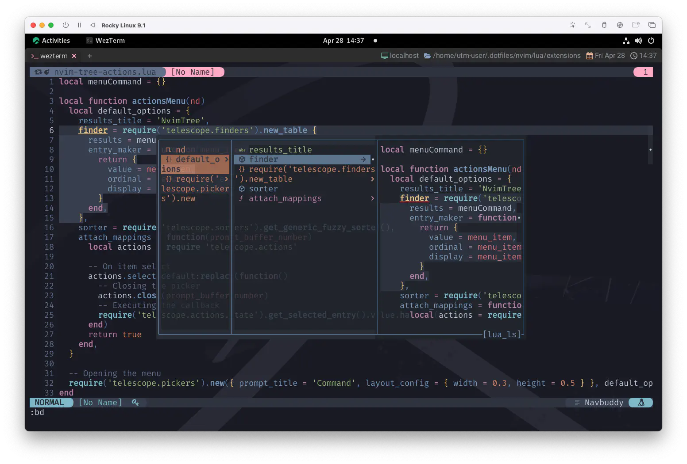
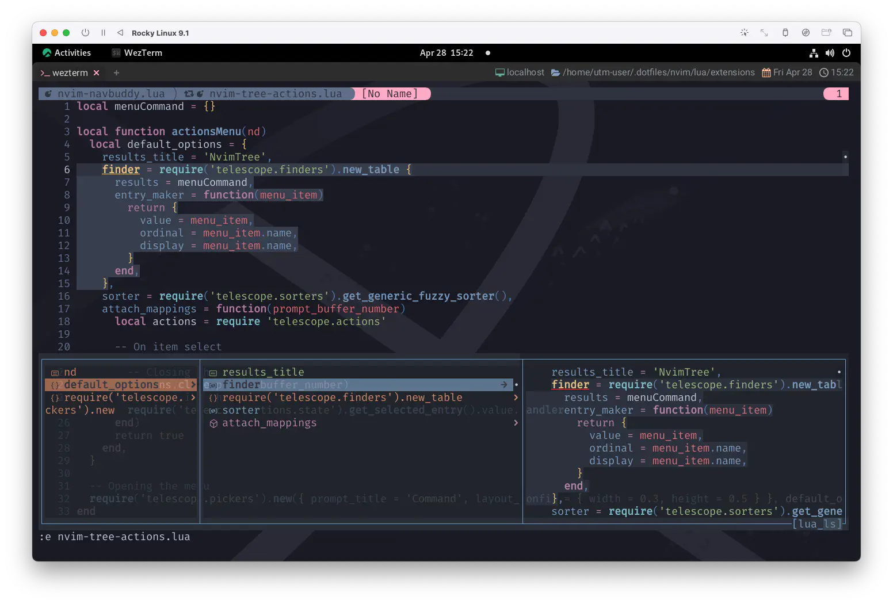
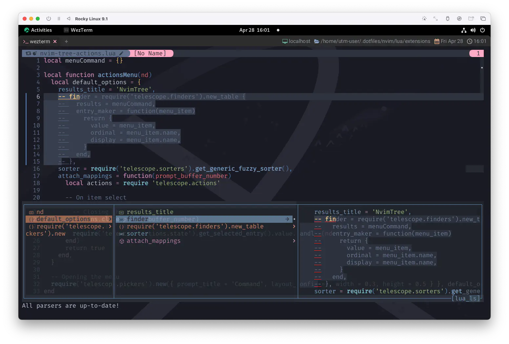
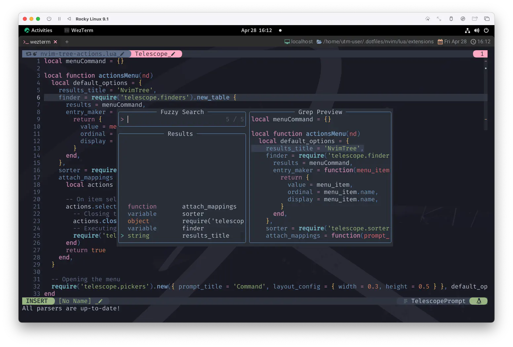
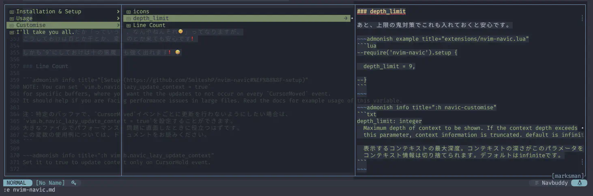

nvim-navbuddy
nvim-navicで紹介されているように、完全なパンくず
1
体験ができるようにしてみましょう❗
"ヘンゼルとグレーテル" はグリム童話🧒👧 で、グリム童話はグリム兄弟👨👨 がまとめた童話集で...。
って、お話が迷子😿 ...あ、いつも通りでした😹
Another red letter day
So the pound has dropped and the children are creating
また祝日だ
たとえポンドが下落しようとも 子どもたちは創作している
Requirements
もうお馴染みのルーティン😊
ここまで来ると「ああ、それね❗」ってなることが増えてきました😆
nvim-lspconfig
まずはこれですね。これが無いと始まりません 🐇
さて、まずはLSP活用の基盤を築きましょう❗nvim-lspconfigの登場です😆
nvim-lspconfigと併せて、使用する言語に対応したLSPがちゃんと動いている環境が必要です。
このサイトでは16.1節から16.3節までの内容です。これを見てもらえると、一通りは動くようになっているはずです。
nvim-navic
んでもってこれですね。これも無いと始まらないそうです 🐇🐇
nui.nvim
そしてもう一つ、nui.nvim❗このサイトでは初登場です 🐇🐇🐇
UI Component Library for Neovim.
Neovim 用 UI コンポーネントライブラリ。
今回は完全にコンポーネントとしての役割に徹してもらうので、
nui.nvimに対して自分で直接働きかける必要はありません。インストールするだけでOKです❗
Setup
これもやっぱり、動かすだけならすごく簡単😉
lsp
お察しの通り、これはnvim-navicと全く同じです😉
auto_attach
え😮 こっちも省略しちゃっていいんですか❓やったね😋
Installation
もはや迷子になる方が難しい❗
use {
"SmiteshP/nvim-navbuddy",
config = function() require 'extensions.nvim-navbuddy' end,
requires = {
'neovim/nvim-lspconfig', 'SmiteshP/nvim-navic', 'MunifTanjim/nui.nvim',
},
}
はい、できた😆
Usage
「言われなくてもわかっとるわー❗」てな事だとは思うんですが、これだとちょっと大変なので
vim.api.nvim_create_user_command('Nb', function()
vim.cmd.Navbuddy()
end, {})
とか、
vim.keymap.set('n', '<leader>nb', vim.cmd.Navbuddy)
...とか、しておくといいかもしれません。
それでは、インストールを済ませてから呼び出してみましょう😉 
Telescopeと似ていますが、これはnui.nvimのウィンドウなので、(デフォルトでは) hjklでカーソルが動きます。
ちょっとこれだと例が面白くないので、
15.11.1節で作成した
extensions/nvim-tree-actions.luaで動かしてみるとこんな感じです😊

このリストと連動してファイル上でも選択範囲が動いていますね。ほら面白い❗🤹
No.168🔹対決⑪
あれだけのオーラだ...❗❗
正真正銘全てをしぼり尽くしたんだろう
When you’re through with life
And all hope is lost
きみが全てを尽くして
目の前が真っ暗になったとしても
まだだね🩷
It’s so easy now
Cause you got friends you can trust
安心して
きみには信頼できる仲間がいる
カンペキに勝つ♣️
だろ？Con🩷
Hold out your hand
‘Cause right till the end
貴方の手を差し伸べてあげて
最後の最後まで
To Complete Victory
例えば、setupをこんなふうに変えてみましょう。
ってやってみると... 
だいぶ雰囲気が変わりました😉
window
windowに関してはわたしの好みでカスタマイズしてあります。
パラメータを見れば何が変わるのかなんて、大体想像つきますよね❗
sizeとpositionですもんね❗...説明は無くてもいいですよね😅
パーセンテージで指定するところがちょっとクセに見えるかも知れません。
icons
これはnvim-navicにもあったやつですね😉
わたしはVSCode likeなアイコンに変えてますが、当然しなくてもいいです。
お好みでどうぞ❗
Optional Features
まだ終わらない...❗
use {
"SmiteshP/nvim-navbuddy",
config = function() require 'extensions.nvim-navbuddy' end,
requires = {
'neovim/nvim-lspconfig', 'SmiteshP/nvim-navic', 'MunifTanjim/nui.nvim',
+ 'numToStr/Comment.nvim', 'nvim-telescope/telescope.nvim',
},
}
Comment.nvim
⚡Smart and Powerful commenting plugin for neovim ⚡
⚡neovimのスマートでパワフルなコメントプラグイン ⚡
Comment.nvimも初登場です❗ですが今回はインストールするだけでOKです。
nvim-navbuddyから使用するだけであればsetupも必要ありません😉
これを使うと何ができるかっていうと、例えば適当なところでcをぽちっとすると...😮 
選択されている構文がまとめてコメントアウトできるんですね🌟
元に戻す場合も同じくcで出来ちゃいます😆
Telescope.nvim
Comment.nvimの時と同様に、nvim-navbuddyから今度はtをぽちっ❗

なんだかすごそう❗
もうここまで来ると、正直わたしは使いこなせていません🤯
これもやっぱりTelescopeのサイズを変えたくなるんですけど、
その場合はnvim-navbuddyのsetupで、キーコンフィグを例えばこんなんとかするといいです🐱
local actions = require 'nvim-navbuddy.actions'
--require('nvim-navbuddy').setup {
mappings = {
['t'] = actions.telescope {
layout_config = {
height = 0.40,
width = 0.90,
prompt_position = 'top',
preview_width = 0.70,
},
layout_strategy = 'horizontal',
},
},
--}
Similarly for other languages
今回は全てluaで話を進めてしまっていますが、これに限らずLSPさえ動いていれば割となんでもいけるクチです。

上のスクリーンショットは、Markdownに対してmarksmanが動いてます。これもやっぱりmasonからインストールしてます😉
行こうみんなで「marksman」🎶 2
I'll take you all.
ちょこっとだけ触れるだけのつもりが、結構ガッツリ触れちゃいました😋
みんなの力があったからだよ。
全員(チーム) の勝利ってやつさ🩷 3
さらっといいことも言います🤫
という事で、やっと書き終わりました。あーお腹すいたー...。
お台場青海地区P区画 4 で"肉フェス"やってるんだって...、喰いたい🍖
って、お話が迷子😿 ...あ、いつも通りでした😹
Friends will be friends 5
友達は いつまでも友達
1: パンくずリスト（breadcrumb list）は、ウェブサイト内でのウェブページの位置を、 ツリー構造を持ったハイパーリンクの一覧として示すもの。パンくずナビ、トピックパス、フットパスとも言う。
英語では単に“breadcrumbs”または“breadcrumb navigation”というのが一般的である。
ウェブディレクトリのような大規模なウェブサイト内で、 利用者がサイト内での現在位置を見失わないようにし、ナビゲーションを助けるために使われる。
「パンくずリスト」という名前は、 童話『ヘンゼルとグレーテル』で、主人公が森で迷子にならないように通り道にパンくずを置いていった、というエピソードに由来する。 Wikipediaより
2: よしいくぞうってなるやつ🤣
3: なんか知らない間にドッジボールが続いていましたが、こっちも完結❗
4: ん⁉️ "地区P" とは言わないんれすね❗(これ言いたかっただけ😆)
5: Friends Will Be Friends (by Queen): Freddie Mercury と John Deacon が作曲し、1986年6月9日にアルバム『A Kind of Magic』のシングルとしてリリースされた。 Wikipediaより。
絶対不変と思われていたQueenのライブセットリスト (Roger の "Radio Ga Ga"、Brian の "We Will Rock You" と Freddie の"We Are the Champions") に、 最後にして John の "Friends Will Be Friends" が加わった❗っていうエピソードすき。